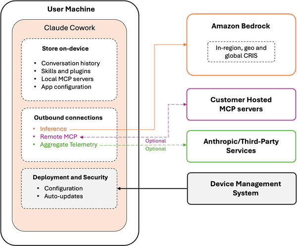
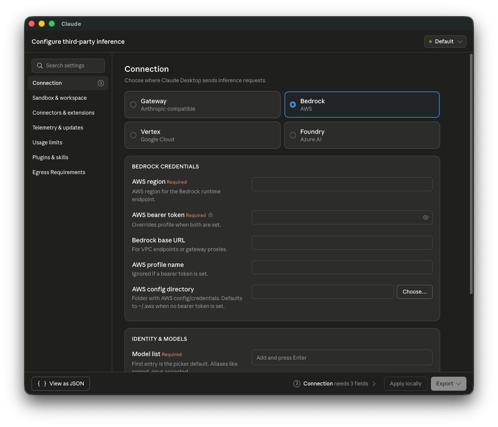
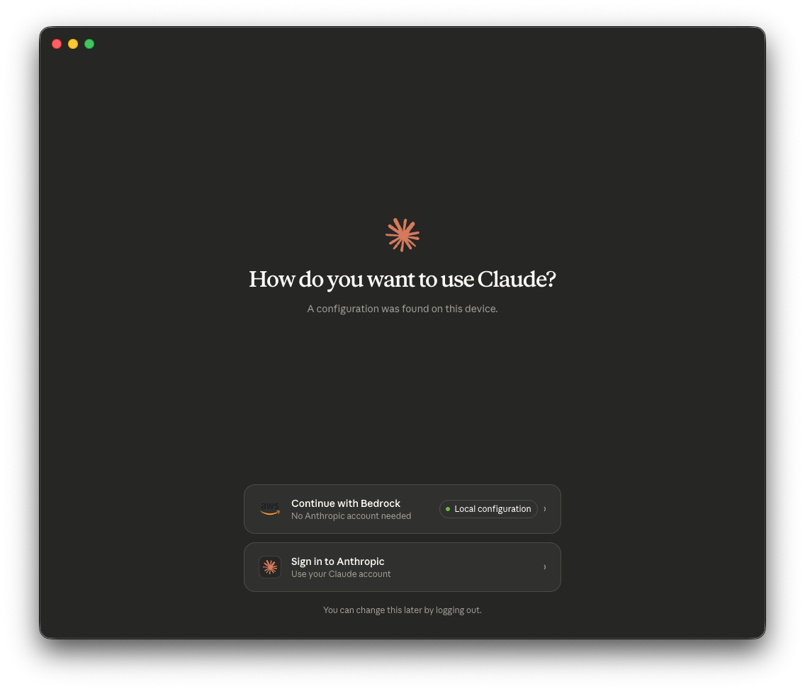
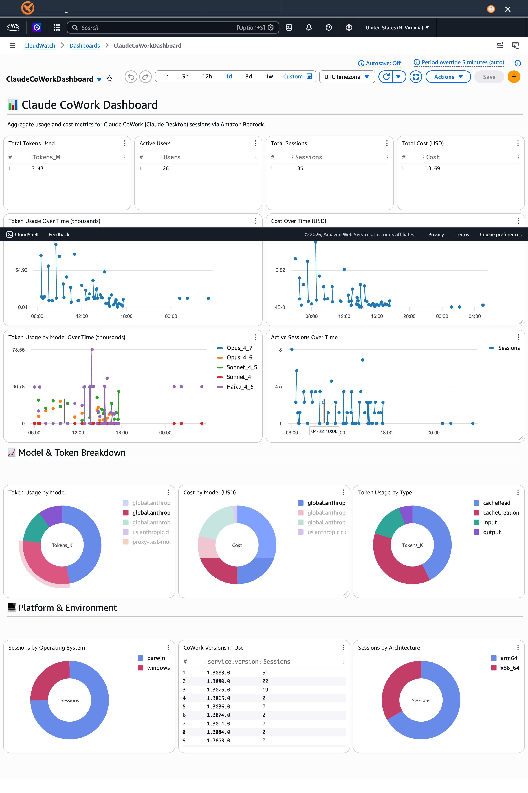

Claude Desktop (Cowork 3P) on Amazon Bedrock¶
This guide explains how to use this solution's credential helper with Claude Desktop (Cowork) in third-party platform mode, enabling enterprise-managed Claude Desktop deployments that authenticate through your existing identity provider.
Overview¶
Claude Cowork with third-party platforms allows IT administrators to deploy Claude Desktop with Amazon Bedrock as the inference backend, managed via MDM configuration profiles. Users get core Claude Desktop capabilities including projects, artifacts, memory, file upload/export, and MCP servers — with consumption-based pricing through your existing AWS billing (no Anthropic seat licensing). Feature availability on Bedrock may differ from claude.ai.
Note: Features that require Anthropic-hosted inference — including the Chat tab, Computer Use, and the Skills Marketplace — are not available in third-party platform mode. See the Feature Matrix for a full comparison.
Key insight: The same authentication infrastructure this solution provides for Claude Code CLI also covers Claude Cowork 3P. This means a single deployment supports both:
- Claude Code (terminal-based coding tool for developers)
- Claude Cowork (Claude Desktop for knowledge workers — product managers, analysts, operations teams)
No additional AWS infrastructure is required — if you've already deployed this solution for Claude Code, you can extend it to Claude Cowork immediately. Your data stays within your AWS account: Amazon Bedrock does not store prompts, files, tool inputs/outputs, or model responses.
Architecture¶
The following diagram from the AWS Blog illustrates the end-to-end flow for Claude Cowork with Amazon Bedrock:

The application has three outbound paths: model inference to Amazon Bedrock in your configured regions, MCP server connections to endpoints you approve, and optional aggregate telemetry to Anthropic (which can be disabled).
Prerequisites¶
Before configuring Claude Cowork 3P, ensure:
- This solution is deployed — Follow the Quick Start Guide to deploy authentication infrastructure
- Users have the credential-process installed — Distribute via
ccwb packageas described in Step 4 of Quick Start - Claude Desktop is installed — Download from claude.com/download. For managed Windows fleets, deploy the app itself via Intune — see Deploying the Claude Desktop app with Intune
- MDM solution available — For deploying configuration profiles to managed devices
Getting Started¶
The workflow depends on whether you've already deployed this solution for Claude Code:
Existing deployments (already ran ccwb init + ccwb deploy):
1. Run ccwb cowork generate to create MDM configuration files
2. Deploy the generated files to managed devices via your MDM solution
3. Distribute the credential-process binary to users (if not already done)
New deployments (starting from scratch):
1. Follow the Quick Start Guide to deploy authentication infrastructure
2. Run ccwb package to build distribution packages — Cowork 3P configs are auto-generated alongside (see the zero-binary exception below)
3. Deploy MDM configuration files and distribute packages to users
Configuration¶
There are three ways to create the MDM configuration. Option 1 (CLI) is recommended as it auto-generates from your deployment profile.
Option 1: Generate via CLI (Recommended)¶
If you've deployed this solution, the ccwb cowork generate command auto-generates MDM configuration files from your existing deployment profile — no manual JSON editing required:
# Generate every format
poetry run ccwb cowork generate
# Just one format
poetry run ccwb cowork generate --format ps1
# Custom model list
poetry run ccwb cowork generate --models opus,sonnet,haiku
# Specific deployment profile
poetry run ccwb cowork generate --profile Production
Generated files are saved to dist/cowork-3p/ by default:
--format |
File | Deploy with |
|---|---|---|
json |
cowork-3p-config.json |
Any MDM that takes raw JSON policy |
mobileconfig |
cowork-3p.mobileconfig |
macOS MDM — Jamf, Kandji, Mosyle |
reg |
cowork-3p.reg |
Windows — reg import by hand, or push the keys via MDM |
ps1 |
Set-CoworkPolicy.ps1 |
Intune → Devices → Scripts and remediations → Platform scripts, with Run this script using the logged on credentials: Yes** |
admx |
ClaudeCowork3P.admx + .adml |
Group Policy, or Intune ADMX ingestion |
For a Windows fleet, prefer ps1. Because Intune runs it in each user's own context, it resolves that user's home path and email (their Entra UPN) at run time — so one script gives the whole fleet correct per-user dashboard attribution with nothing to maintain per person. The .reg route needs those values baked in ahead of time, which is why install.bat substitutes them on the user's own machine.
See CLI Reference for all options.
Cowork 3P configs are also auto-generated alongside distribution packages during ccwb package when enabled via ccwb init.
Exception — IDC zero-binary packages: when auth is IAM Identity Center without quota monitoring,
ccwb packagebuilds a zero-binary package (nocredential-processbinary) and deliberately skips the Claude Desktop MDM config, with a warning — Claude Desktop authentication requires the credential-process binary. Enabling quota monitoring restores binary packaging and MDM generation.
Option 2: Configure via Setup UI¶
Claude Desktop includes a built-in configuration interface for third-party inference. Once the credential-process is installed on the user's machine, you can configure it visually:
- Open Claude Desktop
- Navigate to Menu Bar → Help → Troubleshooting → Enable Developer mode
- Go to Developer → Configure third-party inference
- Select Bedrock as the inference provider

In the Bedrock Credentials section, configure:
- AWS region: Your Bedrock region (e.g., us-west-2)
- AWS profile: The named profile the installer writes to ~/.aws/config — ClaudeCode by default
In the Identity & Models section:
- Model list: Add the model aliases your organization has enabled (e.g., opus, sonnet, haiku)
Once configured, use Export to generate a .mobileconfig (macOS) or .reg (Windows) file for MDM distribution, or Apply locally for immediate testing.
After applying the configuration, Claude Desktop will detect the Bedrock setup and present the option to continue:

Select Continue with Bedrock to start using Claude with your organization's credentials.
Option 3: JSON MDM Configuration¶
For automated deployment at scale, create an MDM profile with the following essential keys:
{
"inferenceProvider": "bedrock",
"inferenceBedrockRegion": "us-west-2",
"inferenceBedrockProfile": "ClaudeCode",
"inferenceModels": ["opus", "sonnet", "haiku"]
}
Note:
inferenceBedrockProfilemust match a profile defined in the user's~/.aws/config(or%USERPROFILE%\.aws\configon Windows). Theinstall.sh/install.batinstaller shipped byccwb packagewrites that profile automatically withcredential_process = credential-process --profile <name>, so Claude Desktop reuses the same authentication pipeline as Claude Code CLI — no extra wrapper script to ship or maintain.Note: See the Configuration Reference below for the full set of optional MDM keys (telemetry, extensions, auto-updates, workspace caps, etc.).
Key Configuration Fields¶
| Key | Description |
|---|---|
inferenceProvider |
Must be set to "bedrock" to activate third-party platform mode with Amazon Bedrock |
inferenceBedrockProfile |
Name of the AWS named profile in ~/.aws/config that Claude Desktop should use for Bedrock calls. The installer configures this profile with credential_process pointing at the bundled credential-process binary |
inferenceBedrockRegion |
AWS region for Bedrock API calls (e.g., us-west-2, us-east-1) |
inferenceBedrockAwsDir |
Path to the directory containing AWS config/credentials files (default: ~/.aws) |
inferenceModels |
JSON array of model entries. Supports simple aliases (["opus", "sonnet", "haiku"]) or object entries with tier tagging (see below). First entry is the default |
Note: The model aliases used by Cowork 3P (
opus,sonnet,haiku) are resolved internally by Claude Desktop and may differ from the CRIS model IDs configured for Claude Code viaANTHROPIC_MODEL. Theccwb cowork generatecommand includes all available aliases by default. Use--modelsto customize the list for your organization.
Model Entries with Family Tier (v1.13576+)¶
Claude Desktop supports object entries in inferenceModels with anthropicFamilyTier and isFamilyDefault fields. This lets tier shortcuts (like "opus" and "sonnet" in the model picker) resolve to your specific Bedrock model IDs:
"inferenceModels": [
{
"name": "global.anthropic.claude-opus-4-8",
"labelOverride": "Claude Opus 4.8",
"anthropicFamilyTier": "opus",
"isFamilyDefault": true
},
{
"name": "global.anthropic.claude-sonnet-4-6",
"labelOverride": "Claude Sonnet 4.6",
"anthropicFamilyTier": "sonnet",
"isFamilyDefault": true
},
{
"name": "global.anthropic.claude-haiku-4-5-20251001-v1:0",
"labelOverride": "Claude Haiku 4.5",
"anthropicFamilyTier": "haiku",
"isFamilyDefault": true
}
]
| Field | Type | Description |
|---|---|---|
name |
string | The model ID your provider routes (e.g., CRIS inference profile ID) |
labelOverride |
string | Optional display name in the model picker |
anthropicFamilyTier |
string | Which Claude tier this model stands in for: opus, sonnet, haiku, or fable |
isFamilyDefault |
boolean | Whether this is the default model when the tier shortcut is used |
supports1m |
boolean | Whether the model supports 1M token context |
When to use object format: Use it when your Bedrock setup uses specific CRIS inference profile IDs (e.g.,
global.anthropic.claude-opus-4-8) and you want the tier shortcuts in the Claude Desktop model picker to resolve to those exact model IDs. The simple alias format (["opus", "sonnet", "haiku"]) still works and lets Claude Desktop handle resolution internally.
How Credentials Flow¶
This solution supports two credential modes for Cowork. The credential helper mode (default since v2.6.0) is recommended because it gives Claude Desktop direct control over credential lifecycle, eliminating the stale-credential bug that required manual app restarts.
Credential Helper Mode (Recommended)¶
When Claude Cowork starts a session:
- Claude Desktop reads
inferenceCredentialHelperfrom the MDM policy — this points directly at the credential-process binary - Claude Desktop runs the binary and reads temporary AWS credentials from stdout
- The output is cached for
inferenceCredentialHelperTtlSecseconds (default: 3500, just under the 1h STS token lifetime) - When the cache expires, Claude Desktop automatically re-runs the helper — no restart required
- If credentials are rejected mid-session, Claude Desktop re-runs with
CLAUDE_HELPER_CONTEXT=mid-session-refreshfor seamless recovery (20s timeout) - Because this mode also sets
inferenceBedrockProfile(as an AWS SDK region/metadata fallback, not the active auth path), this solution additionally setsinferenceCredentialKindtohelper-scriptso Claude Desktop doesn't have to pick between the two — without it, Desktop may prefer the profile instead and authentication fails
The credential-process binary handles the CLAUDE_HELPER_CONTEXT environment variable:
- interactive → Full browser-based OIDC authentication
- mid-session-refresh → Silent refresh via cached refresh_token (no browser)
- background / setup-test → Silent path only, exit non-zero if unavailable
This mode resolves the known issue where Cowork doesn't automatically refresh AWS credentials after token expiry (affecting both IDC and OIDC/Azure AD federated auth users).
Ref: Claude Desktop Credential Helper documentation
AWS Profile Mode (Legacy)¶
The legacy flow uses inferenceBedrockProfile instead:
- Claude Desktop reads
inferenceBedrockProfilefrom the applied MDM policy (registry on Windows, managed preference on macOS) - It hands that profile name to the AWS SDK, which resolves the corresponding
[profile <name>]stanza in~/.aws/config - The stanza's
credential_process = .../credential-process --profile <name>entry runs the bundled credential-process binary - The binary authenticates the user via your OIDC provider (Okta, Azure AD, Auth0, etc.) and returns temporary AWS credentials in the standard AWS
credential_processJSON format - The AWS SDK signs each Bedrock call with those credentials; caching and refresh are handled automatically by the SDK
To use this mode, set cowork_credential_mode = "profile" in your deployment profile before running ccwb cowork generate.
No wrapper script is required — Cowork reuses the same credential-process binary and ~/.aws/config entry that install.sh / install.bat already configure for Claude Code CLI.
⚠️ boto3 resolves
~/.aws/credentialsbefore~/.aws/config. If~/.aws/credentialscontains a[<profile-name>]block matchinginferenceBedrockProfile— whether written by another tool or by this solution in session-storage mode — boto3 uses it directly and does not fall through tocredential_processto refresh it. Cowork works as long as those static credentials remain valid, then fails with403 The security token included in the request is invalidthe moment they expire (or immediately, if the block contains staleEXPIREDplaceholders from a past logout). The installer shipped byccwb packagepurges any such stanza before writing the new profile, and keyring-mode builds never write to~/.aws/credentialsat all — which is why Keyring is the recommended credential storage method when Cowork 3P is in scope.
Deployment¶
macOS (MDM Configuration Profile)¶
- Create the MDM configuration JSON with your settings
- Export as a
.mobileconfigfile or use Claude Desktop's built-in setup UI: - Open Claude Desktop → Menu Bar → Help → Troubleshooting → Enable Developer mode
- Developer → Configure third-party inference
- Configure fields and export the
.mobileconfig - Deploy via your MDM solution (Jamf, Kandji, Mosyle, etc.)
Windows (Registry)¶
- Create the MDM configuration JSON with your settings
- Export as a
.regfile via the Claude Desktop setup UI, or create registry entries manually - Deploy via Group Policy, Intune, or your MDM solution
Deploying the Claude Desktop app with Intune¶
The steps above configure Claude Desktop — they assume the application itself is already on the machine. For Intune-managed Windows 11 fleets, deploy the app as an MSIX package:
- Official guide: Deploy Claude Desktop for Windows (Anthropic)
- Video walkthrough (community): How to Deploy Claude Desktop via Microsoft Intune to Windows 11 (~9 min) — covers Intune licensing requirements, MSIX upload and app-package deployment, the Virtual Machine Platform prerequisite below, and troubleshooting via Event Viewer (permissions errors, slow installs, Entra vs Intune targeting). A companion video covers managing Claude Desktop updates with Intune.
Important: Cowork features require the Windows Virtual Machine Platform optional feature. Push this once per device (e.g., as an Intune PowerShell script) before or alongside the app package:
VDI Environments¶
In VDI deployments, either: - Set MDM keys in the golden image so every cloned session inherits them - Push keys at runtime through your VDI broker's policy system
Ensure the credential-process binary is included in the VDI image and that ~/.aws/config contains the named profile referenced by inferenceBedrockProfile.
Configuration Reference¶
The full set of MDM configuration keys is documented in the official Anthropic guide. Below is a summary of the most relevant categories.
Inference Settings¶
| Key | Type | Description |
|---|---|---|
inferenceProvider |
string | Selects inference backend. Set to bedrock for Amazon Bedrock |
inferenceBedrockRegion |
string | AWS region for Bedrock |
inferenceBedrockAwsDir |
string | Path to AWS config directory (default: ~/.aws) |
inferenceBedrockBaseUrl |
string | Override Bedrock endpoint (e.g., VPC interface endpoint) |
inferenceModels |
string | JSON-encoded array of model aliases (e.g., "[\"opus\", \"sonnet\", \"haiku\"]") |
inferenceBedrockProfile |
string | Named AWS profile (in ~/.aws/config) that Claude Desktop uses for Bedrock authentication |
Note: Array-typed MDM keys (such as
inferenceModels,managedMcpServers,allowedWorkspaceFolders) are delivered as JSON-encoded strings — the value is a string containing a JSON array, not a native array. For example,inferenceModelsis set to"[\"opus\", \"sonnet\"]", not["opus", "sonnet"]. The Claude Desktop Setup UI and the.mobileconfig/.regexport handle this encoding automatically.
Deployment and Updates¶
| Key | Type | Description |
|---|---|---|
deploymentOrganizationUuid |
string | Stable UUID identifying this deployment |
disableDeploymentModeChooser |
boolean | Hide the deployment mode chooser UI |
disableAutoUpdates |
boolean | Block automatic update checks and downloads |
autoUpdaterEnforcementHours |
integer | Force pending update after this many hours |
MCP, Plugins, and Tools¶
| Key | Type | Description |
|---|---|---|
isClaudeCodeForDesktopEnabled |
boolean | Show the Code tab (terminal coding sessions) |
isDesktopExtensionEnabled |
boolean | Permit local desktop extension installation |
isDesktopExtensionDirectoryEnabled |
boolean | Show the Anthropic extension directory |
isDesktopExtensionSignatureRequired |
boolean | Require signed desktop extensions |
isLocalDevMcpEnabled |
boolean | Permit user-added local MCP servers |
managedMcpServers |
string | JSON array of managed MCP server configs |
disabledBuiltinTools |
string | JSON array of tool names to disable |
Telemetry¶
| Key | Type | Description |
|---|---|---|
disableEssentialTelemetry |
boolean | Block crash/error reports and performance data |
disableNonessentialTelemetry |
boolean | Block product usage analytics |
disableNonessentialServices |
boolean | Block connector favicons and artifact preview |
otlpEndpoint |
string | OTLP collector URL for observability export |
otlpProtocol |
string | OTLP protocol (http/protobuf, http/json, or grpc) |
otlpHeaders |
string | Headers for OTLP requests |
Workspace and Usage Caps¶
| Key | Type | Description |
|---|---|---|
allowedWorkspaceFolders |
string | JSON array of allowed workspace folder paths |
inferenceMaxTokensPerWindow |
integer | Token cap per tumbling window |
inferenceTokenWindowHours |
integer | Tumbling window length in hours (max 720) |
Custom MDM Keys¶
Administrators often need to set additional MDM keys beyond the defaults generated by ccwb cowork generate. Common examples include:
| Key | Purpose |
|---|---|
coworkEgressAllowedHosts |
Allow Claude Desktop to access external hosts (required for Web Fetch) |
coworkWebSearchEnabled |
Enable web search capability |
managedMcpServers |
Deploy managed MCP servers (e.g., Brave Search for web search on Bedrock) |
disabledBuiltinTools |
Lock down specific tools |
allowedWorkspaceFolders |
Restrict workspace access to approved directories |
Enabling via ccwb init¶
The interactive ccwb init wizard asks whether to generate the MDM configuration during packaging:
Claude Desktop Support
Generate MDM configuration for Claude Desktop with Amazon Bedrock
Enable Claude Desktop support? Yes
✓ Claude Desktop MDM config will be generated during packaging
The wizard preserves any custom MDM keys already configured; to add or change them, edit the profile JSON directly as described below.
Configuring via profile JSON¶
You can also edit the profile JSON directly at ~/.ccwb/profiles/<name>.json:
{
"cowork_3p_enabled": true,
"cowork_3p_extra_keys": {
"coworkEgressAllowedHosts": "[\"*\"]",
"coworkWebSearchEnabled": "true",
"managedMcpServers": "[{\"name\":\"brave-search\",\"command\":\"npx\",\"args\":[\"-y\",\"@anthropic-ai/mcp-server-brave-search\"]}]",
"allowedWorkspaceFolders": "[\"/Users\",\"/home\"]"
}
}
Custom keys are merged into the generated MDM configuration after the base keys and monitoring configuration, so they can override defaults if needed.
Note: Values should be strings, including for booleans (
"true") and arrays ("[\"item1\"]"). This matches how MDM systems deliver configuration — all values are stored as strings in the OS preference store.
Web search via AgentCore Gateway¶
In addition to a self-managed MCP server (such as the brave-search example above, which runs locally via npx and a third-party API), the solution can provision a fully managed, AWS-native web search through an Amazon Bedrock AgentCore Gateway with the managed Web Search connector. Queries are served by Amazon's web index and never leave AWS — no third-party search API or outbound search credentials are involved.
When enabled, ccwb package (and ccwb cowork generate) automatically inject a managedMcpServers entry named agentcore-websearch into the generated MDM config — you do not add it by hand.
Enabling it¶
ccwb init— answer yes to the web search question (web search is opt-in, default off).ccwb deploy websearch— deploys the AgentCore Gateway + Web Search connector, reusing your existing identity provider for inbound authorization. The gateway endpoint is saved to your profile.ccwb package(orccwb cowork generate) — injects theagentcore-websearchMCP server into the.json/.mobileconfig/.regoutputs, andinstall.shdrops a smallwebsearch-headershelper next tocredential-process.
The generated entry is a remote MCP server pointing at your gateway, authenticated with a headersHelper script. It is emitted as a JSON-encoded string, like all array/object MDM values:
{
"name": "agentcore-websearch",
"url": "https://<gateway-id>.gateway.bedrock-agentcore.us-east-1.amazonaws.com/mcp",
"headersHelper": "/Users/<you>/claude-code-with-bedrock/websearch-headers",
"headersHelperTtlSec": 900
}
Claude Desktop treats this as a generic remote MCP server and speaks standard MCP JSON-RPC, which the AgentCore Gateway understands. (The built-in server: "websearch" / provider: "custom" connector is not used: it sends a request body the gateway cannot parse, which surfaces in Cowork as "No results" even though authentication succeeds.)
How authentication works¶
The headersHelper is a tiny executable that ccwb package installs next to credential-process (<home>/claude-code-with-bedrock/websearch-headers). On each MCP request — and again every headersHelperTtlSec (900s) — Claude Desktop runs it and attaches whatever headers it prints. The helper execs credential-process --get-mcp-auth-header (the browserless, Go/Python-parity MCP-header mode) which emits:
That mode reads the cached id_token and silently refreshes it via the stored refresh token when expired; it never opens a browser (a headersHelper cannot drive an interactive login). The gateway's CUSTOM_JWT authorizer validates that id_token. An OIDC id_token carries aud = clientId for every provider, so the gateway is deployed with AllowedAudience = [clientId] (the template default) — there is no provider-specific authorizer to configure. The TTL is kept below the token lifetime (Cognito ~1h) so an expiring bearer is refreshed before it lapses.
Absolute paths (important). Claude Desktop on macOS does not expand
~(or env vars) in MDM string values, so theheadersHelper/inferenceCredentialHelperpaths must be absolute. Because the.mobileconfigis generated centrally, the macOS paths embed a__CCWB_HOME__placeholder andinstall.shsubstitutes it with the user's real$HOMEat install time — one artifact distributes centrally, each machine gets a correct absolute path. Windows uses the native%USERPROFILE%. To pin a fixed path yourself, setwebsearch_headers_helper_pathon the profile (applied verbatim to every format).Web Fetch. Web search returns titles, URLs, and snippets; opening those result pages needs sandbox egress, which Cowork blocks by default. When web search is enabled,
ccwbsetscoworkEgressAllowedHosts=["*"]automatically (with a warning) so results are usable out of the box.["*"]allows egress to all hosts — narrow it to a targeted domain list for production by settingcoworkEgressAllowedHostsyourself (e.g. viacowork_3p_extra_keys); an admin-provided value is never overwritten.
Things to know¶
- Region: the managed Web Search connector is currently available in
us-east-1only, so the gateway is deployed there regardless of your other stacks' region. - Data residency: web search queries (or fragments of user prompts) are processed in
us-east-1. Review compliance impact for regulated workloads before enabling. - Cost: approximately $7 per 1,000 queries, billed to your AWS account.
- Identity providers: works with the solution's OIDC providers (Amazon Cognito, Microsoft Entra ID, Okta, Auth0, Google, generic OIDC). Because the bearer is an id_token (
aud = clientId) validated byAllowedAudience, no provider-specific setup is required. See Microsoft Entra ID setup → web search for notes.
Claude Code & joint documentation. The equivalent web search capability for the Claude Code CLI (injected into
settings.jsonvia the credential helper) is delivered by a separate contribution and is not documented here yet. The gateway itself, its template parameters, and the Claude Desktop setup flow are documented in WEB_SEARCH.md.
Verification¶
After deploying the MDM profile:
- Launch Claude Desktop on a test machine
- Verify you see the third-party platform mode indicator (no login prompt for claude.ai)
- Start a conversation — Claude should respond using Bedrock inference
- Check that the credential helper authenticates correctly (user may see an SSO browser prompt on first use)
If users see an error at launch, verify:
- The inferenceProvider key is set to bedrock
- The inferenceBedrockProfile value matches a profile defined in the user's ~/.aws/config
- That profile's credential_process line points at the installed credential-process binary and includes --profile <name>
- The credential-process binary exists at ~/claude-code-with-bedrock/ (or %USERPROFILE%\claude-code-with-bedrock\ on Windows) and is executable
- The user has completed at least one authentication via credential-process (to establish the initial SSO session)
Monitoring¶
When a monitoring stack is deployed, ccwb cowork generate automatically includes the otlpEndpoint in the generated MDM config, pointing Claude Cowork at the same OpenTelemetry collector used by Claude Code. No manual configuration is required.
Claude Cowork sends the following OTLP metrics to the collector:
| Metric | Description |
|---|---|
claude_code.token.usage |
Token counts by type (input, output, cacheRead, cacheCreation) |
claude_code.cost.usage |
Estimated cost in USD (client-side approximation) |
claude_code.session.count |
Number of active sessions |
These are displayed in the Claude Cowork Dashboard in CloudWatch, which shows aggregate token usage, cost, sessions, model breakdown, and platform distribution.
Per-user telemetry attribution¶
Claude Desktop has no otel-helper, so it cannot attach a user identity to its own telemetry the way Claude Code does. Without one, every per-user dashboard widget stays empty and the metrics are aggregate-only. This solution supplies the identity as an x-user-email OTLP header, which the collector stamps onto each event as the user_email attribute the dashboard reads.
The value is resolved automatically, in this order:
CCWB_USER_EMAILenvironment variable, if set (explicit override for IT wrappers)- The signed-in directory identity —
whoami /upnon Windows (the Entra UPN),dsclon macOS unknown— aggregate-only, so a widget never silently publishes nothing
A value without @ is rejected, so a machine-local account name never becomes a phantom dashboard user. Nothing prompts the user: install.bat and install.sh resolve it during install, and the Intune ps1 script resolves it per user at deploy time. To pin it explicitly, pass ccwb cowork generate --user-email someone@example.com.
On an Entra-federated Identity Center setup the UPN is the same address Identity Center reports, so Claude Desktop and Claude Code usage land on the same user — and against the same spending limit.
Per-device identity¶
Every Cowork 3P OTEL event includes a user.id attribute — an anonymous device/installation UUID generated by Claude Desktop. This identifies each device uniquely and can be used for:
- Per-device cost attribution and chargeback
- Identifying high-usage devices
- Correlating Cowork usage with Claude Code quota data
Note:
user.idis a device identifier, not a human identity. To map devices to users, maintain a device enrollment registry (e.g., populated duringccwb packagedistribution or MDM enrollment).Note:
user.email,user.account_uuid, andorganization.idare only available in Claude.ai-managed Cowork deployments (not 3P).
Per-device dashboard dimensions are planned — see #585. Both central and sidecar monitoring modes are supported for Cowork telemetry.

Quota Enforcement¶
Cowork 3P usage is subject to the same per-user quota enforcement as Claude Code. Here's how it works:
How enforcement applies¶
Cowork uses credential-process for credential refresh (via the inferenceBedrockProfile AWS named profile). The credential-process binary checks the quota API on every refresh cycle:
- Cowork's AWS session token expires (~1 hour)
- AWS SDK calls
credential-process --profile <name>for fresh credentials credential-processcalls the quota-check API (GET /check)- If the user is over quota → credentials are denied → Cowork loses Bedrock access
- If under quota → fresh credentials issued → Cowork continues
Enforcement granularity: Per credential refresh (~1 hour). A user can exceed their quota within a session but will be blocked on the next refresh.
How Cowork usage is counted¶
Cowork sends OTLP log events (not metrics) to the collector. The monitoring pipeline processes them:
- Cowork sends
claude_code.api_requestlog events to the OTEL collector - Collector injects
user_emailfrom HTTP attribution headers - Events are written to
/aws/claude-cowork/eventsCloudWatch Logs - MetricFilters extract per-user token counts into the Cowork CloudWatch metric namespace (with
user_emaildimension) quota_monitorLambda queries both the Claude Code and Cowork metric namespaces- Combined usage is aggregated into a single DynamoDB record per user
Result: A user's total quota includes both Claude Code CLI and Cowork Desktop usage.
Requirements for per-user Cowork quota¶
- Monitoring stack deployed (central mode with custom domain + HTTPS, or sidecar mode with local proxy)
- Cowork service token configured (
ccwb initgenerates it) - Attribution headers flowing (credential-process provides
x-user-email) - Cowork dashboard stack deployed (
ccwb deploy cowork-dashboard)
Limitations¶
- No inline blocking: Cowork calls Bedrock directly via AWS credentials. There is no per-request interception — enforcement happens at credential refresh boundaries only.
- Attribution required: If
x-user-emailheader is not configured, Cowork usage is aggregate-only and cannot be attributed to individual users for quota purposes. - Cowork-native
user.id: The opaque hash in raw Cowork events cannot be mapped back to an email without a separate device registry.
Additional Resources¶
- AWS Blog: From Developer Desks to the Whole Organization — Running Claude Cowork in Amazon Bedrock
- Official Anthropic Guide: Install and Configure Claude Cowork with Third-Party Platforms
- Claude Cowork 3P Configuration Reference
- Claude Cowork 3P Feature Matrix
- Claude Cowork with Third-Party Platforms Overview
- Extend Claude Cowork with Third-Party Platforms
- Quick Start Guide — Deploy the authentication infrastructure
- Monitoring Guide — OpenTelemetry monitoring setup